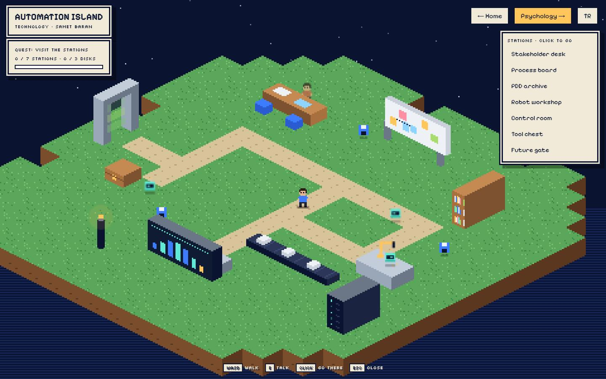

Business analysis · process discovery · RPA
Better questions. Meaningful solutions.
The radar shows everything I work on as a point: projects at the centre, roles in the middle, tools on the edge. They light up as the sweep passes; hover over one.
ProjectRoleTool
Route: three projects
The path from a need to a visible result. It draws itself as you scroll; every stop sits at a coordinate.
0.001.00 · time1.00
WP-01 · (0.08, 0.22)
Process discovery and business analysis
Found repetitive, rule-based processes with business units, prioritised them by business value and wrote process design documents.
WP-02 · (0.40, 0.58)
RPA development and testing
Development, testing and bug fixing; getting the robots to run at scheduled times in the client environment.
WP-03 · (0.72, 0.92)
RPA performance dashboard
Transaction count, success rate, robot versus manual time and net time saved; from Figma to Supabase.
The logbook
| ENTRY | ORGANISATION | ROLE |
|---|---|---|
| LOG-03 | Kronovita | RPA and business analysisClient meetings, process discovery, PDDs, development, reporting |
| LOG-02 | Teleperformance | Business analystScope changes, test feedback, go-live |
| LOG-01 | Project-based | Business analysisRequirements, acceptance criteria, data analysis, reporting |
Hidden sector found

▶ Enter the gameAutomation island: explore my work on foot.